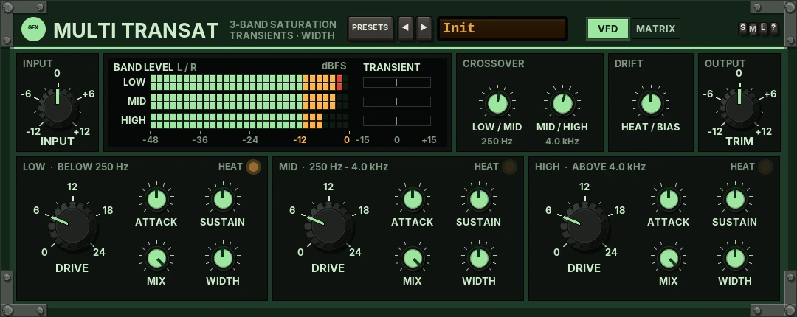
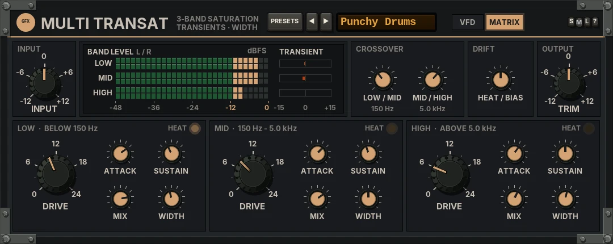

Multi Transat
A three-band analogue saturation unit in the spirit of a mid-70s British design, with a transient shaper and stereo width on every band.

Overview
Multi Transat splits the signal into LOW, MID and HIGH bands and gives each band the same three tools: a transient shaper, a warm discrete-transistor saturation and stereo width. The sound is designed from scratch.
The split is a Linkwitz-Riley crossover at 24 dB per octave, with the low band phase-aligned to the upper split, so the three bands sum back flat: with DRIVE at 0 the whole unit measures flat within about 0.05 dB. Each band's frequency range is shown beside its name.
DRIVE is level-compensated, so it changes the colour rather than the level: warm 2nd and 3rd harmonics that grow as you push it, peaks softened. The transient shaper is level-independent, with its envelope times tuned per band (slower in the lows, faster in the highs). A mix tool, its output stage passes straight through (no clip).
Reach for it for
- Analogue warmth on a mix bus or master, band by band
- Punchier drums, or tamed snap, without a compressor
- Mono lows and wider highs in one pass
- Thickening a bass or a vocal in just the part of the spectrum that needs it
Controls
The header
- PRESETS
- Opens the full preset list, with Reset all to defaults at the end.
- ◄ / ►
- Step to the previous or next preset (wrapping round).
- Preset display
- Shows the preset name. Click it for the preset list too.
- STEREO / MONO
- MONO folds the output to mono (both sides the same): the check for phase and image. It fades, so it doesn't click.
- S / M / L
- Panel size: small, medium or large. The panel also scales to fit the plugin window. New instances open in medium, on Init.
- ?
- Opens a pop-up with the design credit, the GFX website address and the address of this manual. Click anywhere to close it.
Knobs: drag up or down (Shift for fine moves) or use the mouse wheel; double-click resets a knob to its default. The label under a knob turns into its value while you touch it.
INPUT and BAND LEVEL
- INPUT
- -12 to +12 dB (0 dB): the level into the unit, and so into the saturation.
- BAND LEVEL
- Each band's output level, left and right, from -48 to 0 dBFS, and beside it the band's TRANSIENT bar: the shaper's live gain, from -15 dB (amber, left) to +15 dB (green, right).
The crossovers
- LOW / MID
- 50 Hz - 1 kHz (250 Hz).
- MID / HIGH
- 1 - 12 kHz (4 kHz). It never sits below 1.5 times the LOW / MID point.
Both glide as you turn them, so they don't zip.
Each band: LOW, MID, HIGH
- HEAT
- A lamp that glows as the band warms up (see DRIFT).
- ATTACK
- -15 to +15 dB (0): lifts or softens the start of each hit. It leaves the tails alone.
- SUSTAIN
- -15 to +15 dB (0): lifts or tucks the tail of each sound.
- DRIVE
- 0 to 24 dB (6 dB): how hard the band is driven into the saturation, level-compensated. At 6 dB it adds a gentle warmth (under 0.5% at -12 dBFS), at 24 dB it is thick and dense.
- MIX
- 0 - 100% (100%): the saturated band against the clean band, in parallel and in phase.
- WIDTH
- 0 - 200% (100%): 0% is mono, 100% as it was, 200% wide (the side doubled, the level kept steady).

OUTPUT and the bottom strip
- OUTPUT
- -12 to +12 dB (0 dB).
- DRIFT
- 0 - 100% (50%, the standard amount; 0 = none): heat and bias. See DRIFT below.
- IN / OUT
- The input and output meters, with the STEREO / MONO state beside them.
DRIFT
Heat and bias. Each band warms with what it is fed, rising over a couple of seconds and cooling over about six: as it warms, its bias leans further (more 2nd harmonic) and its drive edges up, by up to 1.5 dB. Each band's bias also wanders slowly on its own path. At 0 it all holds still.
Presets
Twelve presets, Init and eleven more. A preset sets the crossovers and the three bands; INPUT, OUTPUT, STEREO / MONO and DRIFT stay as they are. Every preset plays within about 1.5 dB of Init.
- Init
- Every band at DRIVE 6 dB, MIX 100%, no transient shaping, normal width.
- Gentle Warmth
- A little more drive, mixed in parallel, the highs a touch wider.
- Punchy Drums
- ATTACK up in every band and SUSTAIN down in the lows and mids, with drive: tighter, harder hits.
- Tame the Snap
- ATTACK down, most in the highs: softer, rounder transients.
- Wide Air
- The highs wide (150%) with a little sustain and drive.
- Mono Lows
- The lows below 150 Hz in mono, the highs a touch wider.
- Vocal Presence
- Drive and attack in the mids and highs, the lows tucked.
- Bass Glue
- The lows below 120 Hz driven hard and in mono, with sustain.
- Room Lift
- SUSTAIN up in every band and the upper bands wider: more room.
- Snappy Mix Bus
- Attack, drive and a little width across the bands, mixed in parallel.
- Thick and Hot
- Heavy drive in every band.
- Clean Width
- No saturation (MIX 0): width only, narrower lows and wider highs.
- Reset all to defaults
- (Last in the list.) Init, with INPUT, OUTPUT, STEREO / MONO and DRIFT back to their defaults too.
Tips
- On a mix bus, start at Gentle Warmth and bring MIX down until you only just hear it.
- Set the LOW / MID crossover between the kick and the bass and the drums' body, then shape each separately.
- Use MONO to check that wide highs haven't gone hollow.
- For width without colour, use Clean Width: MIX at 0 bypasses the saturation.
File: gfx-multi-transat.jsfx